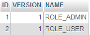
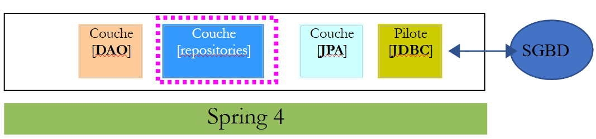
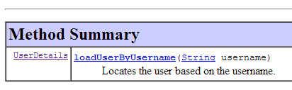
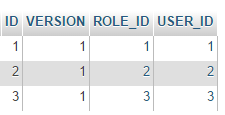

16. [Curso]: Proteção do acesso a um serviço web com o Spring Security
Palavras-chave: arquitetura multicamadas, Spring, injeção de dependências, serviço web seguro / JSON, cliente / servidor
16.1. Suporte
 |  |
Os projetos para este capítulo podem ser encontrados na pasta [support / chap-16]. O script SQL é utilizado para gerar a base de dados necessária para os testes.
16.2. O papel do Spring Security numa aplicação Web
Vamos situar o Spring Security no contexto do desenvolvimento de uma aplicação web. Na maioria das vezes, esta será construída com base numa arquitetura multicamadas, como a seguinte:
 |
- A camada [Spring Security] concede acesso à camada [web] apenas a utilizadores autorizados.
16.3. Um tutorial sobre o Spring Security
Vamos importar novamente um guia do Spring, seguindo os passos 1 a 3 abaixo:
 |
 |
O projeto é composto pelos seguintes elementos:
- na pasta [templates], encontrará as páginas HTML do projeto;
- [Application]: é a classe executável do projeto;
- [MvcConfig]: é a classe de configuração do Spring MVC;
- [WebSecurityConfig]: é a classe de configuração do Spring Security;
16.3.1. Configuração do Maven
O Projeto [3] é um projeto Maven. Vamos examinar o seu ficheiro [pom.xml] para ver as suas dependências:
<?xml version="1.0" encoding="UTF-8"?>
<project xmlns="http://maven.apache.org/POM/4.0.0" xmlns:xsi="http://www.w3.org/2001/XMLSchema-instance"
xsi:schemaLocation="http://maven.apache.org/POM/4.0.0 http://maven.apache.org/xsd/maven-4.0.0.xsd">
<modelVersion>4.0.0</modelVersion>
<groupId>org.springframework</groupId>
<artifactId>gs-securing-web</artifactId>
<version>0.1.0</version>
<parent>
<groupId>org.springframework.boot</groupId>
<artifactId>spring-boot-starter-parent</artifactId>
<version>1.2.3.RELEASE</version>
</parent>
<dependencies>
<dependency>
<groupId>org.springframework.boot</groupId>
<artifactId>spring-boot-starter-thymeleaf</artifactId>
</dependency>
<!-- tag::security[] -->
<dependency>
<groupId>org.springframework.boot</groupId>
<artifactId>spring-boot-starter-security</artifactId>
</dependency>
<!-- end::security[] -->
</dependencies>
<properties>
<start-class>hello.Application</start-class>
</properties>
<build>
<plugins>
<plugin>
<groupId>org.springframework.boot</groupId>
<artifactId>spring-boot-maven-plugin</artifactId>
</plugin>
</plugins>
</build>
</project>
- linhas 10–14: o projeto é um projeto Spring Boot;
- linhas 17–20: dependência da estrutura [Thymeleaf];
- linhas 22–25: dependência da estrutura Spring Security;
16.3.2. visualizações Thymeleaf
 |
A visualização [home.html] é a seguinte:
 |
<!DOCTYPE html>
<html xmlns="http://www.w3.org/1999/xhtml"
xmlns:th="http://www.thymeleaf.org"
xmlns:sec="http://www.thymeleaf.org/thymeleaf-extras-springsecurity3">
<head>
<title>Spring Security Example</title>
</head>
<body>
<h1>Welcome!</h1>
<p>
Click <a th:href="@{/hello}">here</a> to see a greeting.
</p>
</body>
</html>
- linha 12: o atributo [th:href="@{/hello}"] irá gerar o atributo [href] da tag [<a>]. O valor [@{/hello}] irá gerar o caminho [<context>/hello], onde [context] é o contexto da aplicação web;
O código HTML gerado é o seguinte:
<!DOCTYPE html>
<html xmlns="http://www.w3.org/1999/xhtml" xmlns:sec="http://www.thymeleaf.org/thymeleaf-extras-springsecurity3">
<head>
<title>Spring Security Example</title>
</head>
<body>
<h1>Welcome!</h1>
<p>
Click
<a href="/hello">here</a>
to see a greeting.
</p>
</body>
</html>
A visualização [hello.html] é a seguinte:
 |
<!DOCTYPE html>
<html xmlns="http://www.w3.org/1999/xhtml"
xmlns:th="http://www.thymeleaf.org"
xmlns:sec="http://www.thymeleaf.org/thymeleaf-extras-springsecurity3">
<head>
<title>Hello World!</title>
</head>
<body>
<h1 th:inline="text">Hello [[${#httpServletRequest.remoteUser}]]!</h1>
<form th:action="@{/logout}" method="post">
<input type="submit" value="Sign Out" />
</form>
</body>
</html>
- Linha 9: O atributo [th:inline="text"] irá gerar o texto da tag [<h1>]. Este texto contém uma expressão $ que deve ser avaliada. O elemento [[${#httpServletRequest.remoteUser}]] é o valor do atributo [RemoteUser] do pedido HTTP atual. Este é o nome do utilizador que está a sessão;
- linha 10: um formulário HTML. O atributo [th:action="@{/logout}"] irá gerar o atributo [action] da tag [form]. O valor [@{/logout}] irá gerar o caminho [<context>/logout], em que [context] é o contexto da aplicação web;
O código HTML gerado é o seguinte:
<!DOCTYPE html>
<html xmlns="http://www.w3.org/1999/xhtml" xmlns:sec="http://www.thymeleaf.org/thymeleaf-extras-springsecurity3">
<head>
<title>Hello World!</title>
</head>
<body>
<h1>Hello user!</h1>
<form method="post" action="/logout">
<input type="submit" value="Sign Out" />
<input type="hidden" name="_csrf" value="b152e5b9-d1a4-4492-b89d-b733fe521c91" />
</form>
</body>
</html>
- linha 8: a tradução de Olá [[${#httpServletRequest.remoteUser}]]!;
- linha 9: a tradução de @{/logout};
- linha 11: um campo oculto denominado (atributo name) _csrf;
A vista [login.html] é a seguinte:
 |
<!DOCTYPE html>
<html xmlns="http://www.w3.org/1999/xhtml"
xmlns:th="http://www.thymeleaf.org"
xmlns:sec="http://www.thymeleaf.org/thymeleaf-extras-springsecurity3">
<head>
<title>Spring Security Example</title>
</head>
<body>
<div th:if="${param.error}">Invalid username and password.</div>
<div th:if="${param.logout}">You have been logged out.</div>
<form th:action="@{/login}" method="post">
<div>
<label> User Name : <input type="text" name="username" />
</label>
</div>
<div>
<label> Password: <input type="password" name="password" />
</label>
</div>
<div>
<input type="submit" value="Sign In" />
</div>
</form>
</body>
</html>
- linha 9: o atributo [th:if="${param.error}"] garante que a tag <div> só será gerada se o URL que exibe a página de login contiver o parâmetro [error] (http://context/login?error);
- linha 10: o atributo [th:if="${param.logout}"] garante que a tag <div> só será gerada se a URL que exibe a página de login contiver o parâmetro [logout] (http://context/login?logout);
- linhas 11–23: um formulário HTML;
- linha 11: o formulário será enviado para a URL [<context>/login], onde <context> é o contexto da aplicação web;
- linha 13: um campo de entrada denominado [username];
- linha 17: um campo de entrada denominado [password];
O código HTML gerado é o seguinte:
<!DOCTYPE html>
<html xmlns="http://www.w3.org/1999/xhtml" xmlns:sec="http://www.thymeleaf.org/thymeleaf-extras-springsecurity3">
<head>
<title>Spring Security Example </title>
</head>
<body>
<div>
You have been logged out.
</div>
<form method="post" action="/login">
<div>
<label>
User Name :
<input type="text" name="username" />
</label>
</div>
<div>
<label>
Password:
<input type="password" name="password" />
</label>
</div>
<div>
<input type="submit" value="Sign In" />
</div>
<input type="hidden" name="_csrf" value="ef809b0a-88b4-4db9-bc53-342216b77632" />
</form>
</body>
</html>
Repare que, na linha 28, o Thymeleaf adicionou um campo oculto chamado [_csrf].
16.3.3. Configuração do Spring MVC
 |
A classe [MvcConfig] configura a estrutura Spring MVC:
package hello;
import org.springframework.context.annotation.Configuration;
import org.springframework.web.servlet.config.annotation.ViewControllerRegistry;
import org.springframework.web.servlet.config.annotation.WebMvcConfigurerAdapter;
@Configuration
public class MvcConfig extends WebMvcConfigurerAdapter {
@Override
public void addViewControllers(ViewControllerRegistry registry) {
registry.addViewController("/home").setViewName("home");
registry.addViewController("/").setViewName("home");
registry.addViewController("/hello").setViewName("hello");
registry.addViewController("/login").setViewName("login");
}
}
- linha 7: a anotação [@Configuration] torna a classe [MvcConfig] uma classe de configuração;
- linha 8: a classe [MvcConfig] estende a classe [WebMvcConfigurerAdapter] para substituir determinados métodos;
- linha 10: redefinição de um método da classe pai;
- linhas 11–16: o método [addViewControllers] permite que URLs sejam associadas a visualizações HTML. As seguintes associações são feitas aqui:
view | |
/templates/home.html | |
/templates/hello.html | |
/modelos/login.html |
O sufixo [html] e a pasta [templates] são os valores predefinidos utilizados pelo Thymeleaf. Podem ser alterados através da configuração. A pasta [templates] deve estar na raiz do classpath do projeto:
 |
No [1] acima, as pastas [java] e [resources] são ambas pastas de origem. Isto significa que o seu conteúdo estará na raiz do classpath do projeto. Portanto, no [2], as pastas [hello] e [templates] estarão na raiz do classpath.
16.3.4. Configuração do Spring Security
 |
A classe [WebSecurityConfig] configura a estrutura Spring Security:
package hello;
import org.springframework.context.annotation.Configuration;
import org.springframework.security.config.annotation.authentication.builders.AuthenticationManagerBuilder;
import org.springframework.security.config.annotation.web.builders.HttpSecurity;
import org.springframework.security.config.annotation.web.configuration.WebSecurityConfigurerAdapter;
import org.springframework.security.config.annotation.web.servlet.configuration.EnableWebMvcSecurity;
@Configuration
@EnableWebMvcSecurity
public class WebSecurityConfig extends WebSecurityConfigurerAdapter {
@Override
protected void configure(HttpSecurity http) throws Exception {
http.authorizeRequests().antMatchers("/", "/home").permitAll().anyRequest().authenticated();
http.formLogin().loginPage("/login").permitAll().and().logout().permitAll();
}
@Override
protected void configure(AuthenticationManagerBuilder auth) throws Exception {
auth.inMemoryAuthentication().withUser("user").password("password").roles("USER");
}
}
- linha 9: a anotação [@Configuration] torna a classe [WebSecurityConfig] uma classe de configuração;
- linha 10: a anotação [@EnableWebSecurity] torna a classe [WebSecurityConfig] uma classe de configuração do Spring Security;
- linha 11: a classe [WebSecurity] estende a classe [WebSecurityConfigurerAdapter] para substituir determinados métodos;
- linha 12: redefinição de um método da classe pai;
- linhas 13–16: o método [configure(HttpSecurity http)] é substituído para definir direitos de acesso para os vários URLs da aplicação;
- linha 14: o método [http.authorizeRequests()] permite que as URLs sejam associadas a direitos de acesso. São feitas as seguintes associações:
regra | código | |
acesso sem autenticação | | |
apenas acesso autenticado |
- linha 15: define o método de autenticação. A autenticação é realizada através de um formulário URL [/login] acessível a todos [http.formLogin().loginPage("/login").permitAll()]. O logout também é acessível a todos;
- linhas 19–21: redefinem o método [configure(AuthenticationManagerBuilder auth)] que gere os utilizadores;
- linha 20: a autenticação é realizada utilizando utilizadores codificados [auth.inMemoryAuthentication()]. Um utilizador é definido aqui com o nome de utilizador [user], palavra-passe [password] e função [USER]. Aos utilizadores com a mesma função podem ser atribuídas as mesmas permissões;
16.3.5. Classe executável
 |
A classe [Application] é a seguinte:
package hello;
import org.springframework.boot.autoconfigure.EnableAutoConfiguration;
import org.springframework.boot.SpringApplication;
import org.springframework.context.annotation.ComponentScan;
import org.springframework.context.annotation.Configuration;
@EnableAutoConfiguration
@Configuration
@ComponentScan
public class Application {
public static void main(String[] args) throws Throwable {
SpringApplication.run(Application.class, args);
}
}
- Linha 8: A anotação [@EnableAutoConfiguration] instrui o Spring Boot (linha 3) a realizar a configuração que o programador não definiu explicitamente;
- linha 9: torna a classe [Application] uma classe de configuração do Spring;
- linha 10: instrui o sistema a analisar o diretório que contém a classe [Application] para procurar componentes Spring. As duas classes [MvcConfig] e [WebSecurityConfig] serão, assim, encontradas porque possuem a anotação [@Configuration];
- linha 13: o método [main] da classe executável;
- linha 14: o método estático [SpringApplication.run] é executado com a classe de configuração [Application] como parâmetro. Já nos deparámos com este processo e sabemos que o servidor Tomcat incorporado nas dependências Maven do projeto será iniciado e o projeto implementado nele. Vimos que quatro URLs eram geridas [/, /home, /login, /hello] e que algumas estavam protegidas por direitos de acesso.
16.3.6. Testar a aplicação
Vamos começar por solicitar a URL [/], que é uma das quatro URLs aceites. Está associada à vista [/templates/home.html]:
 |
A URL solicitada [/] é acessível a todos. É por isso que conseguimos recuperá-la. O link [aqui] é o seguinte:
A URL [/hello] será solicitada quando clicarmos no link. Esta está protegida:
regra | código | |
acesso sem autenticação | | |
apenas acesso autenticado |
É necessário estar autenticado para aceder. O Spring Security redirecionará então o navegador do cliente para a página de autenticação. Com base na configuração apresentada, esta é a página na URL [/login]. Esta página é acessível a todos:
http.formLogin().loginPage("/login").permitAll().and().logout().permitAll();
Assim, obtemos isto [1]:
 |
O código-fonte da página obtida é o seguinte:
- na linha 7, aparece um campo oculto que não consta na página original [login.html]. Foi adicionado pelo Thymeleaf. Este código, conhecido como CSRF (Cross-Site Request Forgery), foi concebido para eliminar uma vulnerabilidade de segurança. Este token deve ser reenviado ao Spring Security juntamente com a autenticação para que seja aceite;
Recordamos que apenas o par utilizador/palavra-passe é reconhecido pelo Spring Security. Se introduzirmos outra coisa em [2], obtemos a mesma página com uma mensagem de erro em [3]. O Spring Security redirecionou o navegador para o URL [http://localhost:8080/login?error]. A presença do parâmetro [error] desencadeou a exibição da tag:
<div th:if="${param.error}">Invalid username and password.</div>
Agora, vamos introduzir os valores esperados de utilizador/palavra-passe [4]:
 |
- em [4], fazemos o login;
- em [5], o Spring Security redireciona-nos para a URL [/hello], porque essa é a URL que solicitámos quando fomos redirecionados para a página de início de sessão. A identidade do utilizador foi apresentada pela seguinte linha de [hello.html]:
<h1 th:inline="text">Hello [[${#httpServletRequest.remoteUser}]]!</h1>
A página [5] apresenta o seguinte formulário:
<form th:action="@{/logout}" method="post">
<input type="submit" value="Sign Out" />
</form>
Quando clica no botão [Sair], é enviada uma solicitação POST para a URL [/logout]. Tal como a URL [/login], esta URL é acessível a todos:
http.formLogin().loginPage("/login").permitAll().and().logout().permitAll();
No nosso mapeamento de URL/visualização, não definimos nada para a URL [/logout]. O que irá acontecer? Vamos experimentar:
 |
- Em [6], clicamos no botão [Sair];
- em [7], vemos que fomos redirecionados para o URL [http://localhost:8080/login?logout]. O Spring Security solicitou este redirecionamento. A presença do parâmetro [logout] no URL fez com que a seguinte linha fosse exibida na visualização:
<div th:if="${param.logout}">You have been logged out.</div>
16.3.7. Conclusão
No exemplo anterior, poderíamos ter escrito a aplicação web primeiro e, posteriormente, ter-lhe aplicado medidas de segurança. O Spring Security é não intrusivo. É possível implementar segurança numa aplicação web que já tenha sido escrita. Além disso, descobrimos os seguintes pontos:
- é possível definir uma página de autenticação;
- a autenticação deve ser acompanhada pelo token CSRF emitido pelo Spring Security;
- se a autenticação falhar, é redirecionado para a página de autenticação com um parâmetro de erro adicional no URL;
- se a autenticação for bem-sucedida, é redirecionado para a página solicitada no momento da autenticação. Se solicitar a página de autenticação diretamente, sem passar por uma página intermédia, o Spring Security redireciona-o para a URL [/] (este caso não foi demonstrado);
- O utilizador sai da sessão solicitando a URL [/logout] com um pedido POST. O Spring Security redireciona-o então para a página de autenticação com o parâmetro «logout» na URL;
Todas estas conclusões baseiam-se no comportamento padrão do Spring Security. Este comportamento pode ser alterado através da configuração, substituindo determinados métodos da classe [WebSecurityConfigurerAdapter].
O tutorial anterior será de pouca utilidade para nós daqui em diante. Na verdade, iremos utilizar:
- uma base de dados para armazenar utilizadores, as suas palavras-passe e as suas funções;
- autenticação baseada em cabeçalhos HTTP;
Existem muito poucos tutoriais disponíveis para o que pretendemos fazer aqui. A solução que iremos propor é uma combinação de trechos de código encontrados aqui e ali.
16.4. Implementação de segurança no serviço web do produto / JSON
16.4.1. A base de dados
A base de dados [dbintrospringdata] está a ser atualizada para incluir utilizadores, as suas palavras-passe e as suas funções. Estão a ser adicionadas três novas tabelas:

Tabela [USERS]: utilizadores
- ID: chave primária;
- VERSION: coluna de versionamento de linhas;
- IDENTITY: um identificador descritivo para o utilizador;
- LOGIN: o nome de utilizador do utilizador;
- PASSWORD: a sua palavra-passe;
Na tabela USERS, as palavras-passe não são armazenadas em texto simples:
 |
O algoritmo utilizado para encriptar as palavras-passe é o algoritmo BCRYPT.
Tabela [ROLES]: funções
- ID: chave primária;
- VERSION: coluna de versão da linha;
- NAME: nome da função. Por predefinição, o Spring Security espera nomes no formato ROLE_XX, como ROLE_ADMIN ou ROLE_GUEST;
 |
Tabela [USERS_ROLES]: tabela de junção USERS/ROLES
Um utilizador pode ter várias funções, e uma função pode incluir vários utilizadores. Esta é uma relação muitos-para-muitos representada pela tabela [USERS_ROLES].
- ID: chave primária;
- VERSION: coluna de versionamento de linhas;
- USER_ID: identificador do utilizador;
- ROLE_ID: identificador da função;
 |
16.4.2. O projeto Eclipse
Criamos o seguinte projeto Eclipse:
1  |
- em [1]: o novo projeto com os seguintes pacotes:
- [spring.security.entities]: contém as entidades JPA correspondentes às três novas tabelas da base de dados;
- [spring.security.repositories]: contém os repositórios Spring Data associados às três novas tabelas;
- [spring.security.dao]: contém um serviço baseado nos [repositórios];
- [spring.security.config]: contém a configuração do projeto, incluindo a configuração para acesso seguro ao serviço web;
- [spring.security.boot]: contém a classe de inicialização para o serviço web seguro;
16.4.3. A configuração do Maven
O novo projeto é um projeto Maven configurado pelo seguinte ficheiro [pom.xml]:
<project xmlns="http://maven.apache.org/POM/4.0.0" xmlns:xsi="http://www.w3.org/2001/XMLSchema-instance"
xsi:schemaLocation="http://maven.apache.org/POM/4.0.0 http://maven.apache.org/xsd/maven-4.0.0.xsd">
<modelVersion>4.0.0</modelVersion>
<groupId>istia.st.spring.security</groupId>
<artifactId>intro-spring-security-server-01</artifactId>
<version>0.0.1-SNAPSHOT</version>
<name>intro-spring-security-server-01</name>
<description>démo spring security</description>
<properties>
<project.build.sourceEncoding>UTF-8</project.build.sourceEncoding>
<java.version>1.8</java.version>
</properties>
<parent>
<groupId>org.springframework.boot</groupId>
<artifactId>spring-boot-starter-parent</artifactId>
<version>1.2.7.RELEASE</version>
</parent>
<dependencies>
<dependency>
<groupId>istia.st.webjson</groupId>
<artifactId>intro-server-webjson-01</artifactId>
<version>0.0.1-SNAPSHOT</version>
</dependency>
<!-- Spring security -->
<dependency>
<groupId>org.springframework.boot</groupId>
<artifactId>spring-boot-starter-security</artifactId>
</dependency>
<!-- Spring logs -->
<dependency>
<groupId>org.springframework.boot</groupId>
<artifactId>spring-boot-starter-logging</artifactId>
</dependency>
<!-- Spring Boot -->
<dependency>
<groupId>org.springframework.boot</groupId>
<artifactId>spring-boot</artifactId>
</dependency>
<!-- Spring Boot Test -->
<dependency>
<groupId>org.springframework.boot</groupId>
<artifactId>spring-boot-starter-test</artifactId>
<scope>test</scope>
</dependency>
</dependencies>
<!-- plugins -->
<build>
<plugins>
<plugin>
<artifactId>maven-assembly-plugin</artifactId>
<configuration>
<descriptorRefs>
<descriptorRef>jar-with-dependencies</descriptorRef>
</descriptorRefs>
</configuration>
</plugin>
<plugin>
<groupId>org.apache.maven.plugins</groupId>
<artifactId>maven-surefire-plugin</artifactId>
<version>2.18.1</version>
</plugin>
</plugins>
</build>
</project>
- linhas 23–27: reutilizamos o código existente com o serviço web/arquivo JSON que analisámos;
- linhas 29–32: a dependência que traz as classes do Spring Security;
- linhas 34–37: a biblioteca de registo;
- linhas 39–42: a biblioteca que permite a utilização das anotações do Spring Boot;
- linhas 44–48: a biblioteca necessária para testes;
16.4.4. As novas entidades [JPA]
 |
A camada JPA define três novas entidades:
 |
A classe [User] representa a tabela [USERS]:
package spring.security.entities;
import javax.persistence.Column;
import javax.persistence.Entity;
import javax.persistence.Table;
import spring.data.entities.AbstractEntity;
@Entity
@Table(name = "USERS")
public class User extends AbstractEntity {
// properties
@Column(name = "NAME")
private String name;
@Column(name = "LOGIN")
private String login;
@Column(name = "PASSWORD")
private String password;
// manufacturer
public User() {
}
public User(String name, String login, String password) {
this.name = name;
this.login = login;
this.password = password;
}
// getters and setters
...
}
- linha 11: a classe estende a classe [AbstractEntity] já utilizada para as outras entidades;
A classe [Role] representa a tabela [ROLES]:
package spring.security.entities;
import javax.persistence.Column;
import javax.persistence.Entity;
import javax.persistence.Table;
import spring.data.entities.AbstractEntity;
@Entity
@Table(name = "ROLES")
public class Role extends AbstractEntity {
// properties
@Column(name="NAME")
private String name;
// manufacturers
public Role() {
}
public Role(String name) {
this.name = name;
}
// getters and setters
public String getName() {
return name;
}
public void setName(String name) {
this.name = name;
}
}
A classe [UserRole] representa a tabela [USERS_ROLES]:
package spring.security.entities;
import javax.persistence.Column;
import javax.persistence.Entity;
import javax.persistence.JoinColumn;
import javax.persistence.ManyToOne;
import javax.persistence.Table;
import spring.data.entities.AbstractEntity;
@Entity
@Table(name = "USERS_ROLES")
public class UserRole extends AbstractEntity {
// foreign keys
@Column(name = "USER_ID", insertable = false, updatable = false)
private Long userId;
@Column(name = "ROLE_ID", insertable = false, updatable = false)
private Long roleId;
// a UserRole refers to a User
@ManyToOne
@JoinColumn(name = "USER_ID")
private User user;
// a UserRole refers to a Role
@ManyToOne
@JoinColumn(name = "ROLE_ID")
private Role role;
// manufacturers
public UserRole() {
}
public UserRole(User user, Role role) {
this.user = user;
this.role = role;
}
// getters and setters
...
}
- linhas 22–24: definem a chave estrangeira da tabela [USERS_ROLES] para a tabela [USERS];
- linhas 27-29: definem a chave estrangeira da tabela [USERS_ROLES] para a tabela [ROLES];
16.4.5. Os [repositórios]
 |
Cada uma das entidades JPA anteriores é gerida por um [repositório] Spring Data:
 |
A interface [UserRepository] gere o acesso às entidades [User]:
package spring.security.repositories;
import org.springframework.data.jpa.repository.Query;
import org.springframework.data.repository.CrudRepository;
import spring.security.entities.Role;
import spring.security.entities.User;
public interface UserRepository extends CrudRepository<User, Long> {
// liste des rôles d'un utilisateur identifié par son id
@Query("select ur.role from UserRole ur where ur.user.id=?1")
Iterable<Role> getRoles(long id);
// liste des rôles d'un utilisateur identifié par son login unique
@Query("select ur.role from UserRole ur where ur.user.login=?1 and ur.user.password=?2")
Iterable<Role> getRoles(String login, String password);
// recherche d'un utilisateur via son login
User findUserByLogin(String login);
}
- linha 9: a interface [UserRepository] estende a interface [CrudRepository] do Spring Data (linha 4);
- linhas 12-13: o método [getRoles(User user)] recupera todas as funções de um utilizador identificado pelo seu [id]
- linhas 16-17: igual ao anterior, mas para um utilizador identificado pelo seu nome de utilizador e palavra-passe;
- linha 20: para encontrar um utilizador pelo seu nome de utilizador;
A interface [RoleRepository] gere o acesso às entidades [Role]:
package spring.security.repositories;
import org.springframework.data.repository.CrudRepository;
import spring.security.entities.Role;
public interface RoleRepository extends CrudRepository<Role, Long> {
// search for a role by name
Role findRoleByName(String name);
}
- linha 7: a interface [RoleRepository] estende a interface [CrudRepository];
- linha 10: pode pesquisar uma função pelo seu nome;
A interface [UserRoleRepository] gere o acesso às entidades [UserRole]:
package spring.security.repositories;
import org.springframework.data.repository.CrudRepository;
import spring.security.entities.UserRole;
public interface UserRoleRepository extends CrudRepository<UserRole, Long> {
}
- Linha 5: A interface [UserRoleRepository] simplesmente estende a interface [CrudRepository] sem adicionar nenhum método novo;
16.4.6. Classes de gestão de utilizadores e funções
 |
 |
O Spring Security requer a criação de uma classe que implemente a seguinte interface [UsersDetail]:
 |
Esta interface é implementada aqui pela classe [AppUserDetails]:
package spring.security.dao;
import java.util.ArrayList;
import java.util.Collection;
import org.springframework.security.core.GrantedAuthority;
import org.springframework.security.core.authority.SimpleGrantedAuthority;
import org.springframework.security.core.userdetails.UserDetails;
import spring.security.entities.Role;
import spring.security.entities.User;
import spring.security.repositories.UserRepository;
public class AppUserDetails implements UserDetails {
private static final long serialVersionUID = 1L;
// properties
private User user;
private UserRepository userRepository;
// manufacturers
public AppUserDetails() {
}
public AppUserDetails(User user, UserRepository userRepository) {
this.user = user;
this.userRepository = userRepository;
}
// -------------------------interface
@Override
public Collection<? extends GrantedAuthority> getAuthorities() {
Collection<GrantedAuthority> authorities = new ArrayList<>();
for (Role role : userRepository.getRoles(user.getId())) {
authorities.add(new SimpleGrantedAuthority(role.getName()));
}
return authorities;
}
@Override
public String getPassword() {
return user.getPassword();
}
@Override
public String getUsername() {
return user.getLogin();
}
@Override
public boolean isAccountNonExpired() {
return true;
}
@Override
public boolean isAccountNonLocked() {
return true;
}
@Override
public boolean isCredentialsNonExpired() {
return true;
}
@Override
public boolean isEnabled() {
return true;
}
// getters and setters
...
}
- linha 14: a classe [AppUserDetails] implementa a interface [UserDetails];
- linhas 19–20: a classe encapsula um utilizador (linha 19) e o repositório que fornece detalhes sobre esse utilizador (linha 20);
- linhas 26–29: o construtor que instancia a classe com um utilizador e o seu repositório;
- linhas 32–36: implementação do método [getAuthorities] da interface [UserDetails]. Deve construir uma coleção de elementos do tipo [GrantedAuthority] ou de um tipo derivado. Aqui, usamos o tipo derivado [SimpleGrantedAuthority] (linha 36), que encapsula o nome de uma das funções do utilizador da linha 19;
- linhas 35–37: percorremos a lista de funções do utilizador da linha 19 para construir uma lista de elementos do tipo [SimpleGrantedAuthority];
- linhas 42–44: implementamos o método [getPassword] da interface [UserDetails]. Devolvemos a palavra-passe do utilizador da linha 19;
- linhas 42–44: implementamos o método [getUserName] da interface [UserDetails]. Devolvemos o nome de utilizador do utilizador da linha 19;
- linhas 51–54: a conta do utilizador nunca expira;
- linhas 56–59: a conta do utilizador nunca é bloqueada;
- linhas 61–64: as credenciais do utilizador nunca expiram;
- linhas 66–69: a conta do utilizador está sempre ativa;
O Spring Security também requer a existência de uma classe que implemente a interface [AppUserDetailsService]:
 |
Esta interface é implementada pela seguinte classe [AppUserDetailsService]:
package spring.security.dao;
import org.springframework.beans.factory.annotation.Autowired;
import org.springframework.security.core.userdetails.UserDetails;
import org.springframework.security.core.userdetails.UserDetailsService;
import org.springframework.security.core.userdetails.UsernameNotFoundException;
import org.springframework.stereotype.Service;
import spring.security.entities.User;
import spring.security.repositories.UserRepository;
@Service
public class AppUserDetailsService implements UserDetailsService {
@Autowired
private UserRepository userRepository;
@Override
public UserDetails loadUserByUsername(String login) throws UsernameNotFoundException {
// search for user via login
User user = userRepository.findUserByLogin(login);
// found?
if (user == null) {
throw new UsernameNotFoundException(String.format("login [%s] inexistant", login));
}
// render user details
return new AppUserDetails(user, userRepository);
}
}
- linha 12: a classe será um componente Spring, pelo que estará disponível no seu contexto;
- linhas 15-16: o componente [UserRepository] será injetado aqui;
- linhas 19–28: implementação do método [loadUserByUsername] da interface [UserDetailsService] (linha 10). O parâmetro é o nome de utilizador do utilizador;
- linha 21: o utilizador é procurado através do seu nome de utilizador;
- linhas 23–25: se o utilizador não for encontrado, é lançada uma exceção;
- linha 27: um objeto [AppUserDetails] é construído e devolvido. É, de facto, do tipo [UserDetails] (linha 19);
16.4.7. Configuração do projeto
 |
O projeto é configurado por duas classes:
 |
A classe [DaoConfig] configura a camada [DAO] introduzida pelo novo projeto:
package spring.security.config;
import org.springframework.context.annotation.Bean;
import org.springframework.context.annotation.ComponentScan;
import org.springframework.context.annotation.Import;
import org.springframework.data.jpa.repository.config.EnableJpaRepositories;
@EnableJpaRepositories(basePackages = { "spring.security.repositories" })
@ComponentScan(basePackages = { "spring.security.dao" })
@Import({ spring.data.config.DaoConfig.class })
public class DaoConfig {
// constants
final static private String[] ENTITIES_PACKAGES = { "spring.data.entities", "spring.security.entities" };
@Bean
public String[] packagesToScan() {
return ENTITIES_PACKAGES;
}
}
- Linha 10: Importamos a classe de configuração [spring.data.config.DaoConfig] do projeto [intro-spring-data-01], que implementa a camada [DAO] para produtos e categorias;
- linha 8: especificamos as pastas no projeto atual que contêm [repositórios] Spring Data;
- linha 9: especificamos as pastas no projeto atual que contêm componentes Spring relacionados com a camada [DAO];
- Linha 14: Especifica os diretórios que contêm entidades JPA. Estes incluem os do projeto [intro-spring-data-01] e os do projeto do servidor seguro. Esta informação é definida no bean nas linhas 16–19. Este bean substitui o bean com o mesmo nome no projeto [intro-spring-data-01]:
final static private String[] ENTITIES_PACKAGES = { "spring.data.entities" };
// EntityManagerFactory
@Bean
public EntityManagerFactory entityManagerFactory(JpaVendorAdapter jpaVendorAdapter, DataSource dataSource) {
LocalContainerEntityManagerFactoryBean factory = new LocalContainerEntityManagerFactoryBean();
factory.setJpaVendorAdapter(jpaVendorAdapter);
factory.setPackagesToScan(packagesToScan());
factory.setDataSource(dataSource);
factory.afterPropertiesSet();
return factory.getObject();
}
@Bean
public String[] packagesToScan() {
return ENTITIES_PACKAGES;
}
Na camada [DAO], a linha 8 analisa os diretórios especificados na linha 1. Devido à redefinição do bean nas linhas 14–17 no projeto secure (linhas 16–19), a linha 8 acima irá agora analisar os diretórios ["spring.data.entities", "spring.security.entities"]. Note que a classe importada na linha 10 a partir da classe [spring.security.config.DaoConfig] deve incluir a anotação [@Configuration]; caso contrário, o comportamento descrito acima não funcionará.
A classe [SecurityConfig] configura o aspeto de segurança do projeto. Já nos deparámos com uma classe de configuração do Spring Security:
package hello;
import org.springframework.context.annotation.Configuration;
import org.springframework.security.config.annotation.authentication.builders.AuthenticationManagerBuilder;
import org.springframework.security.config.annotation.web.builders.HttpSecurity;
import org.springframework.security.config.annotation.web.configuration.WebSecurityConfigurerAdapter;
import org.springframework.security.config.annotation.web.servlet.configuration.EnableWebMvcSecurity;
@Configuration
@EnableWebMvcSecurity
public class WebSecurityConfig extends WebSecurityConfigurerAdapter {
@Override
protected void configure(HttpSecurity http) throws Exception {
http.authorizeRequests().antMatchers("/", "/home").permitAll().anyRequest().authenticated();
http.formLogin().loginPage("/login").permitAll().and().logout().permitAll();
}
@Override
protected void configure(AuthenticationManagerBuilder auth) throws Exception {
auth.inMemoryAuthentication().withUser("user").password("password").roles("USER");
}
}
Seguiremos o mesmo procedimento:
- linha 11: definir uma classe que estenda a classe [WebSecurityConfigurerAdapter];
- linha 13: definir um método [configure(HttpSecurity http)] que define os direitos de acesso às várias URLs do serviço web;
- linha 19: definir um método [configure(AuthenticationManagerBuilder auth)] que define os utilizadores e as suas funções;
A classe [SecurityConfig] será a seguinte:
package spring.security.config;
import org.springframework.beans.factory.annotation.Autowired;
import org.springframework.context.annotation.ComponentScan;
import org.springframework.context.annotation.Import;
import org.springframework.http.HttpMethod;
import org.springframework.security.config.annotation.authentication.builders.AuthenticationManagerBuilder;
import org.springframework.security.config.annotation.web.builders.HttpSecurity;
import org.springframework.security.config.annotation.web.configuration.EnableWebSecurity;
import org.springframework.security.config.annotation.web.configuration.WebSecurityConfigurerAdapter;
import org.springframework.security.config.http.SessionCreationPolicy;
import org.springframework.security.crypto.bcrypt.BCryptPasswordEncoder;
import spring.security.dao.AppUserDetailsService;
@EnableWebSecurity
@ComponentScan(basePackages = { "spring.security.service" })
@Import({ spring.webjson.config.AppConfig.class, DaoConfig.class })
public class SecurityConfig extends WebSecurityConfigurerAdapter {
@Autowired
private AppUserDetailsService appUserDetailsService;
// security
private boolean activateSecurity = true;
@Override
protected void configure(AuthenticationManagerBuilder registry) throws Exception {
// authentication is performed by bean [appUserDetailsService]
// the password is encrypted using the BCrypt hash algorithm
registry.userDetailsService(appUserDetailsService).passwordEncoder(new BCryptPasswordEncoder());
}
@Override
protected void configure(HttpSecurity http) throws Exception {
// CSRF
http.csrf().disable();
// secure application?
if (activateSecurity) {
// the password is transmitted by the header Authorization: Basic xxxx
http.httpBasic();
// the HTTP OPTIONS method must be authorized for all
http.authorizeRequests() //
.antMatchers(HttpMethod.OPTIONS, "/", "/**").permitAll();
// only the ADMIN role can use the application
http.authorizeRequests() //
.antMatchers("/", "/**") // all URL
.hasRole("ADMIN");
// no session
http.sessionManagement().sessionCreationPolicy(SessionCreationPolicy.STATELESS);
}
}
}
- linha 16: para ativar os componentes do Spring Security;
- linha 17: adicionamos os componentes Spring do pacote [spring.security.service];
- linha 18: importamos os beans da camada [DAO] que acabámos de introduzir, bem como os do servidor web/JSON não seguro;
- linhas 21–22: a classe [AppUserDetails], que fornece acesso aos utilizadores da aplicação, é injetada;
- linha 25: um booleano que protege (true) ou não protege (false) a aplicação web;
- linhas 27–32: o método [configure(HttpSecurity http)] define os utilizadores e as suas funções. Aceita um tipo [AuthenticationManagerBuilder] como parâmetro. Este parâmetro é enriquecido com duas informações (linha 38):
- uma referência ao [appUserDetailsService] da linha 22, que fornece acesso aos utilizadores registados. Note-se aqui que o facto de estarem armazenados numa base de dados não é explicitamente mencionado. Podem, portanto, estar num cache, fornecidos por um serviço web, etc.
- o tipo de encriptação utilizado para a palavra-passe. Recorde-se que utilizámos o algoritmo BCrypt;
- linhas 34–52: o método [configure(HttpSecurity http)] define os direitos de acesso às URLs do serviço web;
- linha 37: vimos no projeto introdutório que, por predefinição, o Spring Security gere um token CSRF (Cross-Site Request Forgery) que o utilizador que tenta autenticar-se deve enviar de volta ao servidor. Aqui, este mecanismo está desativado. Combinado com o booleano (isSecured=false), isto permite que a aplicação web seja utilizada sem segurança;
- linha 41: Ativamos a autenticação através de cabeçalhos HTTP. O cliente deve enviar o seguinte cabeçalho HTTP:
onde code é a codificação Base64 da cadeia de caracteres login:password. Por exemplo, a codificação Base64 da cadeia de caracteres admin:admin é YWRtaW46YWRtaW4=. Portanto, um utilizador com o nome de utilizador [admin] e a palavra-passe [admin] enviará o seguinte cabeçalho HTTP para se autenticar:
- Linhas 46–48: especificam que todos os URLs do serviço web são acessíveis a utilizadores com a função [ROLE_ADMIN]. Isto significa que um utilizador sem esta função não pode aceder ao serviço web;
- Linha 50: No modo [session], um utilizador que se tenha autenticado uma vez não precisa de o fazer para acessos subsequentes. Aqui, desativamos este modo, pelo que o utilizador terá de se autenticar sempre que aceder ao serviço;
16.4.8. Teste da camada [DAO]
 |
 |
Primeiro, criamos uma classe executável [CreateUser] capaz de criar um utilizador com uma função:
package sprin.security.tests;
import org.springframework.context.annotation.AnnotationConfigApplicationContext;
import org.springframework.security.crypto.bcrypt.BCrypt;
import spring.security.config.DaoConfig;
import spring.security.entities.Role;
import spring.security.entities.User;
import spring.security.entities.UserRole;
import spring.security.repositories.RoleRepository;
import spring.security.repositories.UserRepository;
import spring.security.repositories.UserRoleRepository;
public class CreateUser {
public static void main(String[] args) {
// syntax: login password roleName
// three parameters are required
if (args.length != 3) {
System.out.println("Syntaxe : [pg] user password role");
System.exit(0);
}
// parameters are retrieved
String login = args[0];
String password = args[1];
String roleName = String.format("ROLE_%s", args[2].toUpperCase());
// spring context
AnnotationConfigApplicationContext context = new AnnotationConfigApplicationContext(DaoConfig.class);
UserRepository userRepository = context.getBean(UserRepository.class);
RoleRepository roleRepository = context.getBean(RoleRepository.class);
UserRoleRepository userRoleRepository = context.getBean(UserRoleRepository.class);
// does the role already exist?
Role role = roleRepository.findRoleByName(roleName);
// if it doesn't exist, we create it
if (role == null) {
role = roleRepository.save(new Role(roleName));
}
// does the user already exist?
User user = userRepository.findUserByLogin(login);
// if it doesn't exist, we create it
if (user == null) {
// hash the password with bcrypt
String crypt = BCrypt.hashpw(password, BCrypt.gensalt());
// save user
user = userRepository.save(new User(login, login, crypt));
// we create the relationship with the role
userRoleRepository.save(new UserRole(user, role));
} else {
// the user already exists - does he/she have the required role?
boolean trouvé = false;
for (Role r : userRepository.getRoles(user.getId())) {
if (r.getName().equals(roleName)) {
trouvé = true;
break;
}
}
// if not found, we create the relationship with the role
if (!trouvé) {
userRoleRepository.save(new UserRole(user, role));
}
}
// closing Spring context
context.close();
// end
System.out.println("Travail terminé...");
}
}
- linha 17: a classe espera três argumentos que definem um utilizador: o seu nome de utilizador, palavra-passe e função;
- linhas 25–27: os três parâmetros são recuperados;
- linha 29: o contexto Spring é construído a partir da classe de configuração [AppConfig];
- linhas 30–32: as referências aos três objetos [Repository] que podem ser úteis para criar o utilizador são recuperadas;
- linha 34: verificamos se a função já existe;
- linhas 36–38: caso contrário, criamo-la na base de dados. Terá um nome no formato [ROLE_XX];
- linha 40: verificamos se o login já existe;
- linhas 42-49: se o nome de utilizador não existir, criamo-lo na base de dados;
- linha 44: encriptamos a palavra-passe. Aqui, utilizamos a classe [BCrypt] do Spring Security (linha 4). Por isso, precisamos dos arquivos para esta estrutura. O ficheiro [pom.xml] inclui esta dependência:
<dependency>
<groupId>org.springframework.boot</groupId>
<artifactId>spring-boot-starter-security</artifactId>
</dependency>
- Linha 46: O utilizador é guardado na base de dados;
- linha 48: assim como a relação que o liga à sua função;
- linhas 51–57: se o login já existir, verificamos se a função que pretendemos atribuir-lhe já se encontra entre as suas funções;
- Linhas 59–61: Se a função procurada não for encontrada, é criada uma linha na tabela [USERS_ROLES] para ligar o utilizador à sua função;
- Não implementámos proteções contra possíveis exceções. Esta é uma classe auxiliar para criar rapidamente um utilizador com uma função.
Quando a classe é executada com os argumentos [x x guest], obtêm-se os seguintes resultados na base de dados:
Tabela [USERS]
 |
Tabela [FUNÇÕES]
 |
Tabela [USERS_ROLES]
 |
Agora, vamos considerar a segunda classe [UsersTest], que é um teste JUnit:
|
package spring.security.tests;
import java.util.List;
import org.junit.Assert;
import org.junit.Test;
import org.junit.runner.RunWith;
import org.springframework.beans.factory.annotation.Autowired;
import org.springframework.boot.test.SpringApplicationConfiguration;
import org.springframework.security.core.authority.SimpleGrantedAuthority;
import org.springframework.security.crypto.bcrypt.BCrypt;
import org.springframework.test.context.junit4.SpringJUnit4ClassRunner;
import com.fasterxml.jackson.core.JsonProcessingException;
import com.fasterxml.jackson.databind.ObjectMapper;
import com.google.common.collect.Lists;
import spring.security.config.DaoConfig;
import spring.security.dao.AppUserDetails;
import spring.security.dao.AppUserDetailsService;
import spring.security.entities.Role;
import spring.security.entities.User;
import spring.security.repositories.UserRepository;
@SpringApplicationConfiguration(classes = DaoConfig.class)
@RunWith(SpringJUnit4ClassRunner.class)
public class UsersTest {
@Autowired
private UserRepository userRepository;
@Autowired
private AppUserDetailsService appUserDetailsService;
// mapper jSON
private ObjectMapper mapper = new ObjectMapper();
@Test
public void findAllUsersWithTheirRoles() throws JsonProcessingException {
Iterable<User> users = userRepository.findAll();
for (User user : users) {
System.out.println(String.format("\n----------Utilisateur [%s]",mapper.writeValueAsString(user)));
display("Roles :", userRepository.getRoles(user.getId()));
}
}
@Test
public void findUserByLogin() {
// user [admin] is retrieved
User user = userRepository.findUserByLogin("admin");
// we check that his password is [admin]
Assert.assertTrue(BCrypt.checkpw("admin", user.getPassword()));
// check admin / admin role
List<Role> roles = Lists.newArrayList(userRepository.getRoles("admin", user.getPassword()));
Assert.assertEquals(1L, roles.size());
Assert.assertEquals("ROLE_ADMIN", roles.get(0).getName());
}
@Test
public void loadUserByUsername() {
// user [admin] is retrieved
AppUserDetails userDetails = (AppUserDetails) appUserDetailsService.loadUserByUsername("admin");
// we check that his password is [admin]
Assert.assertTrue(BCrypt.checkpw("admin", userDetails.getPassword()));
// check admin / admin role
@SuppressWarnings("unchecked")
List<SimpleGrantedAuthority> authorities = (List<SimpleGrantedAuthority>) userDetails.getAuthorities();
Assert.assertEquals(1L, authorities.size());
Assert.assertEquals("ROLE_ADMIN", authorities.get(0).getAuthority());
}
// utility method - displays items in a collection
private void display(String message, Iterable<?> elements) throws JsonProcessingException {
System.out.println(message);
for (Object element : elements) {
System.out.println(mapper.writeValueAsString(element));
}
}
}
- linhas 37–44: teste visual. Exibimos todos os utilizadores juntamente com as suas funções;
- linhas 46–56: verificamos se o utilizador [admin] tem a palavra-passe [admin] e a função [ROLE_ADMIN] utilizando o [UserRepository];
- linha 51: [admin] é a palavra-passe em texto simples. Na base de dados, esta é encriptada utilizando o algoritmo BCrypt. O método [BCrypt.checkpw] verifica se a palavra-passe em texto simples encriptada corresponde à que se encontra na base de dados;
- linhas 58–69: verificamos se o utilizador [admin] tem a palavra-passe [admin] e a função [ROLE_ADMIN] utilizando o [appUserDetailsService];
Os testes foram executados com sucesso com os seguintes registos:
16.4.9. Teste do serviço web
Iremos testar o serviço web utilizando o cliente Chrome [Advanced Rest Client]. Teremos de especificar o cabeçalho de autenticação HTTP:
onde [código] é a cadeia codificada em Base64 [login:password]. Para gerar este código, pode utilizar o seguinte programa:
 |
package spring.security.helpers;
import org.springframework.security.crypto.codec.Base64;
public class Base64Encoder {
public static void main(String[] args) {
// we expect two arguments: login password
if (args.length != 2) {
System.out.println("Syntaxe : login password");
System.exit(0);
}
// we retrieve the two arguments
String chaîne = String.format("%s:%s", args[0], args[1]);
// encode the string
byte[] data = Base64.encode(chaîne.getBytes());
// displays its Base64 encoding
System.out.println(new String(data));
}
}
Se executarmos este programa com os dois argumentos [admin admin]:
 |
obtemos o seguinte resultado:
Agora que sabemos como gerar o cabeçalho de autenticação HTTP, iniciamos o serviço web seguro e, em seguida, utilizando o cliente Chrome [Advanced Rest Client], solicitamos a lista de todos os produtos:
 |
- em [1], solicitamos a URL das categorias;
- em [2], utilizando o método GET;
- em [3], fornecemos o cabeçalho de autenticação HTTP. O código [YWRtaW46YWRtaW4=] é a codificação Base64 da cadeia [admin:admin];
- em [4], enviamos o pedido HTTP;
A resposta do servidor é a seguinte:
 |
- em [1], o cabeçalho de autenticação HTTP;
- em [2], o servidor devolve uma resposta JSON;
Conseguimos obter a lista de categorias:
 |
Agora vamos tentar uma solicitação HTTP com um cabeçalho de autenticação incorreto. A resposta é então a seguinte:
 |
- em [1]: o cabeçalho de autenticação HTTP;
Recebemos a seguinte resposta:
 |
- em [2]: a resposta do serviço web;
Agora, vamos experimentar o utilizador / utilizador. Ele existe, mas não tem acesso ao serviço web. Se executarmos o programa de codificação Base64 com os dois argumentos [utilizador utilizador]:
 |
obtemos o seguinte resultado:
 |
- em [1]: o cabeçalho de autenticação HTTP incorreto;
 |
- em [2]: a resposta do serviço web. Diferencia-se da anterior, que era [401 Não autorizado]. Desta vez, o utilizador autenticou-se corretamente, mas não possui permissões suficientes para aceder ao URL;
O nosso serviço web seguro está agora operacional.
16.4.10. Um URL de autenticação
 |
Vamos criar um URL que nos permita determinar se um utilizador está autorizado a aceder ao serviço web. Para tal, criamos o seguinte novo controlador MVC [AuthenticateController]:
package spring.security.service;
import org.springframework.beans.factory.annotation.Autowired;
import org.springframework.context.ApplicationContext;
import org.springframework.stereotype.Controller;
import org.springframework.web.bind.annotation.RequestMapping;
import org.springframework.web.bind.annotation.RequestMethod;
import org.springframework.web.bind.annotation.ResponseBody;
import com.fasterxml.jackson.core.JsonProcessingException;
import com.fasterxml.jackson.databind.ObjectMapper;
import spring.webjson.models.Response;
@Controller
public class AuthenticateController {
// spring dependencies
@Autowired
private ApplicationContext context;
@RequestMapping(value = "/authenticate", method = RequestMethod.GET, produces = "application/json; charset=UTF-8")
@ResponseBody
public String authenticate() throws JsonProcessingException {
// answer jSON
ObjectMapper mapperResponse = context.getBean(ObjectMapper.class);
return mapperResponse.writeValueAsString(new Response<Void>(0, null, null));
}
}
- linha 15: a classe [AuthenticateController] é um controlador Spring. Como tal, expõe URLs;
- linha 22: expõe a URL [/authenticate];
- linha 23: o resultado do método será enviado diretamente para o cliente;
- linhas 26–27: o método limita-se a devolver um objeto [Response] vazio, mas com um [status] igual a 0, indicando que não ocorreu nenhum erro;
Para que serve esta URL? Quando quisermos simplesmente autenticar um utilizador, iremos solicitá-la. Vimos que, se a camada de segurança não aceitar este utilizador, lança uma exceção. Aqui está um exemplo;
Com o utilizador [admin:admin]:
 |  |
Recebemos uma resposta vazia, mas sem exceção.
Com o utilizador [user:user]:
 |  |
Ocorreu uma exceção.
16.4.11. Conclusão
As classes necessárias para o Spring Security foram adicionadas sem modificar o projeto web/JSON original. Este cenário muito favorável decorre do facto de as três tabelas adicionadas à base de dados serem independentes das tabelas existentes. Poderíamos até tê-las colocado numa base de dados separada. Noutros casos, as tabelas adicionadas podem ter relações com tabelas existentes. Nesse caso, as entidades JPA devem ser modificadas, o que geralmente afeta todas as camadas do projeto.
16.5. Um cliente programado para o serviço web/JSON seguro
Já escrevemos um cliente para o serviço web/JSON não seguro:
 |
Vamos agora criar um cliente programado para o serviço web seguro:
 |
Duplicamos o projeto existente [intro-webjson-client] para um novo projeto [intro-spring-security-client-01]:
 |
16.5.1. A classe [AbstractDao]
A classe [AbstractDao] gere a comunicação HTTP com o servidor web/JSON seguro. Como acabámos de ver, nesta comunicação HTTP, o cliente deve agora enviar um cabeçalho de autenticação, por exemplo:
Isto é feito da seguinte forma:
package spring.security.client.dao;
import java.net.URI;
...
public abstract class AbstractDao {
// data
@Autowired
protected RestTemplate restTemplate;
@Autowired
protected String urlServiceWebJson;
// generic request
protected String getResponse(User user, String url, String jsonPost) {
// url : URL to contact
- linha 15: o método genérico [getResponse], responsável pela comunicação HTTP com o serviço web seguro, aceita agora o utilizador que solicita uma URL como seu primeiro parâmetro. A classe [User] é a seguinte:
Esta classe é a seguinte:
 |
package spring.security.client.entities;
public class User {
// properties
private String login;
private String password;
// manufacturer
public User() {
}
public User(String login, String password) {
this.login = login;
this.password = password;
}
// getters and setters
...
}
O método [getResponse] passa então a ser o seguinte:
package spring.security.client.dao;
import java.net.URI;
import java.net.URISyntaxException;
import java.util.Base64;
import org.springframework.beans.factory.annotation.Autowired;
import org.springframework.core.ParameterizedTypeReference;
import org.springframework.http.MediaType;
import org.springframework.http.RequestEntity;
import org.springframework.http.RequestEntity.BodyBuilder;
import org.springframework.http.RequestEntity.HeadersBuilder;
import org.springframework.web.client.RestTemplate;
import spring.security.client.entities.User;
public abstract class AbstractDao {
// data
@Autowired
protected RestTemplate restTemplate;
@Autowired
protected String urlServiceWebJson;
private String getBase64(User user) {
// encodes user and password in base 64 - requires java 8
String chaîne = String.format("%s:%s", user.getLogin(), user.getPassword());
return String.format("Basic %s", new String(Base64.getEncoder().encode(chaîne.getBytes())));
}
// generic request
protected String getResponse(User user, String url, String jsonPost) {
// url : URL to contact
// jsonPost: the jSON value to be posted
try {
// request execution
RequestEntity<?> request;
if (jsonPost == null) {
HeadersBuilder<?> headersBuilder = RequestEntity.get(new URI(String.format("%s%s", urlServiceWebJson, url)))
.accept(MediaType.APPLICATION_JSON);
if (user != null) {
headersBuilder = headersBuilder.header("Authorization", getBase64(user));
}
request = headersBuilder.build();
} else {
BodyBuilder bodyBuilder = RequestEntity.post(new URI(String.format("%s%s", urlServiceWebJson, url)))
.header("Content-Type", "application/json").accept(MediaType.APPLICATION_JSON);
if (user != null) {
bodyBuilder = bodyBuilder.header("Authorization", getBase64(user));
}
request = bodyBuilder.body(jsonPost);
}
// execute the query
return restTemplate.exchange(request, new ParameterizedTypeReference<String>() {
}).getBody();
} catch (URISyntaxException e1) {
throw new DaoException(20, e1);
} catch (RuntimeException e2) {
throw new DaoException(21, e2);
}
}
}
- linhas 42–44, 49–51: se o utilizador não for nulo, então o cabeçalho de autenticação é adicionado. A codificação Base64 do utilizador e da sua palavra-passe é tratada pelo método [getBase64] nas linhas 25–29. Note-se que este método utiliza uma classe [Base64] pertencente ao JDK 1.8.
- À exceção das linhas anteriores, o código permanece inalterado;
16.5.2. A interface [IDao]
Todos os métodos da interface [IDao] recebem um parâmetro adicional [User user]:
 |
package spring.security.client.dao;
import java.util.List;
import spring.security.client.entities.Categorie;
import spring.security.client.entities.Produit;
import spring.security.client.entities.User;
public interface IDaoClient {
// authentication
public void authenticate(User user);
// insert product list
public List<Produit> addProduits(User user, List<Produit> produits);
// removal of all products
public void deleteAllProduits(User user);
// product list update
public List<Produit> updateProduits(User user, List<Produit> produits);
// all products obtained
public List<Produit> getAllProduits(User user);
// inserting a list of categories
public List<Categorie> addCategories(User user, List<Categorie> categories);
// delete all categories
public void deleteAllCategories(User user);
// updating a list of categories
public List<Categorie> updateCategories(User user, List<Categorie> categories);
// obtaining all categories
public List<Categorie> getAllCategories(User user);
// a special product
public Produit getProduitByIdWithCategorie(User user, Long idProduit);
public Produit getProduitByIdWithoutCategorie(User user, Long idProduit);
public Produit getProduitByNameWithCategorie(User user, String nom);
public Produit getProduitByNameWithoutCategorie(User user, String nom);
// a special category
public Categorie getCategorieByIdWithProduits(User user, Long idCategorie);
public Categorie getCategorieByIdWithoutProduits(User user, Long idCategorie);
public Categorie getCategorieByNameWithProduits(User user, String nom);
public Categorie getCategorieByNameWithoutProduits(User user, String nom);
}
- Linha 12: Adicionámos o método [authenticate(User user)] para autenticar um utilizador. Este método lança uma exceção se o utilizador não tiver permissão para aceder à URL [/authenticate] do serviço web;
16.5.3. A classe [Dao]
Todos os métodos da classe [Dao] recebem um parâmetro adicional [User user] que passam para o método genérico [getResponse] da classe [AbstractDao]. Aqui estão dois exemplos:
// authentication
@Override
public void authenticate(User user) {
getResponse(user, "/authenticate", null);
}
@Override
public List<Produit> addProduits(User user, List<Produit> produits) {
// ----------- add products (without category)
try {
// mappers jSON
ObjectMapper mapperPost = context.getBean(ObjectMapper.class);
mapperPost.setFilters(jsonFilterProduitWithoutCategorie);
ObjectMapper mapperResponse = mapperPost;
// request
Response<List<Produit>> response = mapperResponse.readValue(
getResponse(user, "/addProduits", mapperPost.writeValueAsString(produits)),
new TypeReference<Response<List<Produit>>>() {
});
// mistake?
if (response.getStatus() != 0) {
// 1 exception is thrown
throw new DaoException(response.getStatus(), response.getMessages());
} else {
// render the core of the server response
return response.getBody();
}
} catch (DaoException e1) {
throw e1;
} catch (IOException | RuntimeException e2) {
throw new DaoException(100, e2);
}
}
16.5.4. Testes unitários para a classe [Dao]
A classe [Test01] para testes unitários da classe [Dao] é modificada da seguinte forma:
 |
package client.tests.junit;
...
@SpringApplicationConfiguration(classes = DaoConfig.class)
@RunWith(SpringJUnit4ClassRunner.class)
public class Test01 {
// spring context
@Autowired
private ApplicationContext context;
// layer [DAO]
@Autowired
private IDaoClient dao;
// users
static private User admin;
static private User user;
static private User unknown;
@BeforeClass
public static void init() {
admin = new User("admin", "admin");
user = new User("user", "user");
unknown = new User("x", "y");
}
@Before
public void cleanAndFill() {
// the base is cleaned before each test
log("Vidage de la base de données", 1);
// table [CATEGORIES] is emptied - by cascade, table [PRODUITS] will be emptied
dao.deleteAllCategories(admin);
// --------------------------------------------------------------------------------------
log("Remplissage de la base", 1);
// fill the tables
List<Categorie> categories = new ArrayList<Categorie>();
for (int i = 0; i < 2; i++) {
Categorie categorie = new Categorie(String.format("categorie%d", i));
for (int j = 0; j < 5; j++) {
categorie.addProduit(new Produit(String.format("produit%d%d", i, j), 100 * (1 + (double) (i * 10 + j) / 100),
String.format("desc%d%d", i, j)));
}
categories.add(categorie);
}
// add the category - the products will be cascaded in as well
dao.addCategories(admin, categories);
}
@Test
public void showDataBase() throws BeansException, JsonProcessingException {
// list of categories
log("Liste des catégories", 2);
List<Categorie> categories = dao.getAllCategories(admin);
affiche(categories, context.getBean("jsonMapperCategorieWithoutProduits", ObjectMapper.class));
// product list
log("Liste des produits", 2);
List<Produit> produits = dao.getAllProduits(admin);
affiche(produits, context.getBean("jsonMapperProduitWithoutCategorie", ObjectMapper.class));
// a few checks
Assert.assertEquals(2, categories.size());
Assert.assertEquals(10, produits.size());
Categorie categorie = findCategorieByName("categorie0", categories);
Assert.assertNotNull(categorie);
Produit produit = findProduitByName("produit03", produits);
Assert.assertNotNull(produit);
Long idCategorie = produit.getIdCategorie();
Assert.assertEquals(categorie.getId(), idCategorie);
}
...
@Test()
public void checkUserUser() {
ServiceException se = null;
try {
dao.authenticate(user);
} catch (ServiceException e) {
se = e;
}
Assert.assertNotNull(se);
Assert.assertEquals("403 Forbidden", se.getMessages().get(0));
}
@Test()
public void checkUserUnknown() {
ServiceException se = null;
try {
dao.authenticate(unknown);
} catch (ServiceException e) {
se = e;
}
Assert.assertNotNull(se);
Assert.assertEquals("401 Unauthorized", se.getMessages().get(0));
}
@Test()
public void checkUserAdmin() {
ServiceException se = null;
try {
dao.authenticate(admin);
} catch (ServiceException e) {
se = e;
}
Assert.assertNull(se);
}
...
}
- Durante a inicialização da classe de teste, linhas 21–26, são criados três utilizadores:
- o utilizador [admin] tem acesso aos URLs do serviço web, linhas de teste 96–104;
- o utilizador [user] existe, mas não está autorizado a utilizar os URLs do serviço web, linhas de teste 71–81;
- o utilizador [unknown] não existe, linhas de teste 83–93;
- os métodos de teste são os mesmos que já foram vistos para o serviço web não seguro, exceto que os métodos da interface [IDaoClient] são chamados com o utilizador [admin] — que tem permissão para utilizar as URLs — como primeiro parâmetro;
O teste é bem-sucedido, mas podemos ver que é mais lento do que com o serviço web não seguro. Proteger uma aplicação aumenta significativamente os seus tempos de resposta. Há um fator importante que afeta o desempenho do serviço web seguro: na classe [AppConfig] que o configura, escrevemos:
@Override
protected void configure(HttpSecurity http) throws Exception {
// CSRF
http.csrf().disable();
// secure application?
if (activateSecurity) {
// the password is transmitted by the header Authorization: Basic xxxx
http.httpBasic();
// the HTTP OPTIONS method must be authorized for all
http.authorizeRequests() //
.antMatchers(HttpMethod.OPTIONS, "/", "/**").permitAll();
// only the ADMIN role can use the application
http.authorizeRequests() //
.antMatchers("/", "/**") // all URL
.hasRole("ADMIN");
// no session
http.sessionManagement().sessionCreationPolicy(SessionCreationPolicy.STATELESS);
}
}
A linha 17 tem um custo. Obriga o utilizador a autenticar-se em cada acesso. Se a comentarmos, a duração do teste JUnit anterior diminui de 10,57 segundos para 4,21 segundos, porque o utilizador [admin] só se autentica no primeiro teste e não nos seguintes (embora o cabeçalho de autenticação HTTP seja enviado pelo cliente, o servidor não volta a verificar a palavra-passe do utilizador). Com um serviço web não seguro, a duração do teste JUnit cai para 2,33 segundos.